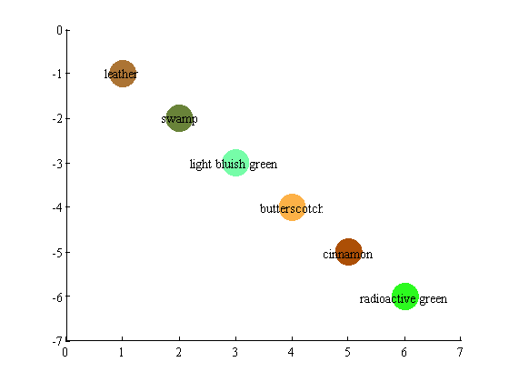
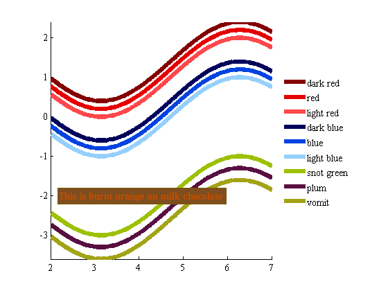

rgb documentation
From the results of an impressively thorough survey by Randall Munroe of XKCD, this function returns the RGB color triplets for just about any color name you can think of. In keeping with Matlab syntax, RGB values are scaled from 0 to 1. If you mispell a color or the color you want is not in the database, rgb will offer suggestions for other similarly-spelled colors.
Contents
Syntax
RGB = rgb('Color Name')
RGB = rgb('Color Name 1','Color Name 2',...,'Color Name N')
RGB = rgb({'Color Name 1','Color Name 2',...,'Color Name N'})Description
RGB = rgb('Color Name') returns the RGB triplet for a color described by 'Color Name'.
RGB = rgb('Color Name 1','Color Name 2',...,'Color Name N') returns an N by 3 matrix containing RGB triplets for each color name.
RGB = rgb({'Color Name 1','Color Name 2',...,'Color Name N'}) accepts list of color names as a character array.
Color reference chart
If you'd like to see your color options before plotting instead of just guessing at names for colors, you can reference the RGB chart here.
Why this data set is neat.
I am colorblind. I know the implications of certain colors by their names, but present me with a color wheel, tell me to point to "gold," and it's possible that I'll end up pointing to an rgb value of [0.6039 0.6824 0.0275]. Here's a perfect time to note that according to responses from nearly a quarter of a million user sessions, the most common name for the color described with an RGB value of [0.6039 0.6824 0.0275] is "puke green." When I'm making a plot, I'd much rather have confidence that comes with typing plot(x,y,'color',rgb('gold')).
Even if you are not colorblind, your computer monitor probably is, at least a little bit--everyone's is. The beauty of the way survey was conducted to construct this data set is in the idea that if you're creating graphics that will be viewed by others using their own monitors, a color you declare using the rgb function is most likely to be perceived by your audience as the color you intended it to be.
Installation
Installation is simple. The rgb function automatically downloads data from the xkcd website the first tim you run it.
Example 1: single color
Get the RGB triplet for chartreuse:
rgb('chartreuse')
ans =
0.76 0.97 0.04
Example 2: multiple colors
Get RGB triplets for multiple colors:
rgb('wintergreen','sunflower yellow','sapphire')
ans =
0.13 0.98 0.53
1.00 0.85 0.01
0.13 0.22 0.67
The way colors are perceived on a computer monitor is not necessarily the way that colors are somewhat officially defined. If we perceived RGB values of [1 0 0] as "red", [0 1 0] as "green", and [0 0 1] as blue, rgb('red','green','blue' would look like an identity matrix instead we have this:
rgb('red','green','blue')
ans =
0.90 0 0
0.08 0.69 0.10
0.01 0.26 0.87
You can also enter color names as a cell array:
myColors = {'leather','swamp','light bluish green','butterscotch','cinnamon','radioactive green'};
rgb_vals = rgb(myColors)
rgb_vals =
0.67 0.45 0.20
0.41 0.51 0.22
0.46 0.99 0.66
0.99 0.69 0.28
0.67 0.31 0.02
0.17 0.98 0.12
and we can easily plot our rgb_vals:
x = 1:length(myColors); y = -x; scatter(x,y,1e3,rgb_vals,'filled') text(x,y,myColors,'horizontalalignment','center') axis([min(x)-1 max(x)+1 min(y)-1 max(y)+1])
Example 3: in a plot
Use the rgb function in plot and text formatting commands:
% Some data related to societal value: x = 2:.01:7; oldWomen = cos(x)+1.4; middleAgedWomen = cos(x)+1.2; youngWomen = cos(x)+1; oldMen = cos(x)+.4; middleAgedMen = cos(x)+.2; youngMen = cos(x); musicians = cos(x)-2; poets = cos(x)-2.3; banjoPickers = cos(x)-2.6; % Plot the data: plot(x,oldWomen,'color',rgb('dark red')) hold on plot(x,middleAgedWomen,'color',rgb('red')) plot(x,youngWomen,'color',rgb('light red')) plot(x,oldMen,'color',rgb('dark blue')) plot(x,middleAgedMen,'color',rgb('blue')) plot(x,youngMen,'color',rgb('light blue')) plot(x,musicians,'color',rgb('snot green')) plot(x,poets,'color',rgb('plum')) plot(x,banjoPickers,'color',rgb('vomit')) % Add some formatting options: set(get(gca,'children'),'linewidth',6) legend('dark red','red','light red','dark blue','blue','light blue',... 'snot green','plum','vomit','location','eastoutside') text(2.2,-2,'This is burnt orange on milk chocolate.',... 'color',rgb('burnt orange'),... 'backgroundcolor',rgb('milk chocolate'),... 'edgecolor',rgb('poop brown'),... 'fontweight','bold') legend boxoff box off axis tight
Example 4: mistakes happen
It happens to the best of us--sometimes we have troubles with diarrhea. It's just plain hard to spell. If this happens to you, rgb will try to offer some help:
rgb('diahrrea')
Color 'diahrrea' not found. Consider one of these options:
'diarrhea'
Similarly, you might not be sure whether it's "blue-green", "bluegreen", or "blue green". Evidently survey respondents declared that the color will look slightly different depending on how you spell it.
rgb('blue-green')
Color 'blue-green' not found. Consider one of these options:
'greenblue'
'bluegreen'
'green/blue'
'blue/green'
'green blue'
'blue green'
Author Info
This function was written by Chad A. Greene of the Institute for Geophysics at the University of Texas at Austin. I do not claim any responsibility for the color data; kudos for the analysis and design of the survey by Randall Munroe. Feel free to email me if you have any questions.